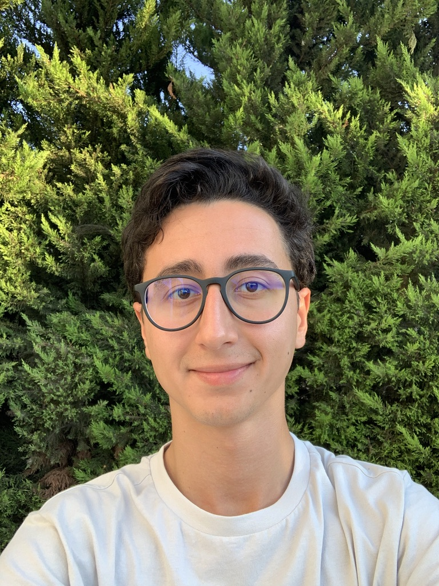

PhD Candidate · Eindhoven University of Technology (TU/e)
Advised by Prof. Aaqib Saeed
About
I am a PhD candidate at the Eindhoven University of Technology (TU/e), where I am advised by Prof. Aaqib Saeed. My research sits at the intersection of machine learning and healthcare, with a focus on building intelligent systems that can understand and reason over complex, heterogeneous health data.
I am broadly interested in how multimodal learning can unlock richer representations from clinical data, and how these advances can translate into reliable, deployable AI tools for healthcare.
Research Interests
Education
Eindhoven University of Technology (TU/e) · Eindhoven, Netherlands · 2025 – present
Supervised by Prof. Aaqib Saeed
Eindhoven University of Technology (TU/e) · Eindhoven, Netherlands · 2023 – 2025
Thesis: Investigating the Effects of Quantization and Knowledge Distillation on Multimodal AI Models
Boğaziçi University · Istanbul, Turkey · 2018 – 2023
GPA: 3.27 / 4.00
Publications